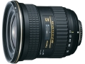

器材库 > 35mm画幅AF变焦镜头 > AT-X 17-35 F4 PRO FX

详细规格
镜头类型
广角变焦镜头
发布日期
2011-06-20
厂家推荐价格
102,900.00 （日元）
焦距
17mm-35mm
最大光圈
f/4.0
最小光圈
f/22
视角（对角）
104.6-65.23
镜头结构
13片/13组
非球面镜片
3片
低/超低色散镜片
2片
光圈叶片
9片
最近对焦距离
28cm
最大放大倍率
0.27
滤镜口径
82mm
镜头卡口
Canon EF, Nikon AF
防抖
否
颜色
黑色
尺寸
89x94.5mm
重量
600g
liuxing5hulin2015-10-21 16:254.33 分
操作性 4.00耐用性 4.00性价比 4.50解像力 4.50色彩还原 4.50机械结构 4.50
daisunfang2013-09-13 20:304.25 分
操作性 3.50耐用性 4.50性价比 4.50解像力 4.50色彩还原 4.50机械结构 4.00
htabc2013-09-02 09:094.83 分
操作性 5.00耐用性 5.00性价比 5.00解像力 4.50色彩还原 4.50机械结构 5.00
极限色彩2013-06-03 11:454.67 分
操作性 5.00耐用性 4.50性价比 4.50解像力 5.00色彩还原 4.50机械结构 4.50
jkai03302012-10-09 03:045 分
操作性 5.00耐用性 5.00性价比 5.00解像力 5.00色彩还原 5.00机械结构 5.00
gspirate2012-05-18 13:47
JewelzGreen2011-08-09 11:353 分
操作性 3.00耐用性 3.00性价比 3.00解像力 3.00色彩还原 3.00机械结构 3.00